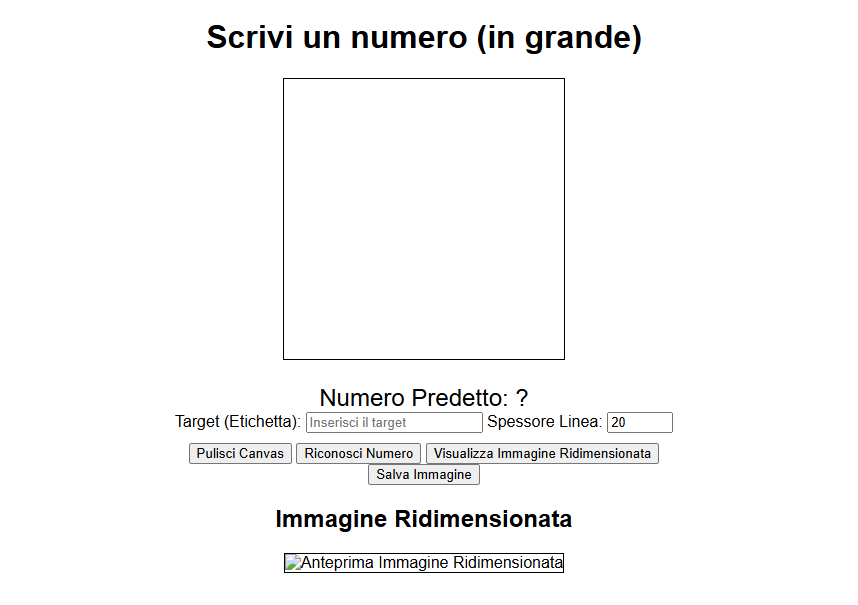

In questo progetto ho realizzato una piccola web app (Javascript - Flask) con lo scopo di mostrare l'utilizzo di CNN (reti neurali convoluzionali) nel
riconoscimento di numeri.
La web app permette in generale di salvare dati sui disegni nel canvas html in un file "records.csv"
creando il proprio dataset su cui addestrare modelli di riconoscimento.
Ho formato così un dataset con 3.000 record circa che contiene dati su immagii di cifre da 0-9 e addestrato una rete convoluzionale con accuracy al 90% circa.
Link al notebook
Questa è come si presenta l'interfaccia
Per riconoscere le cifre disegnate, il progetto utilizza una Rete Neurale Convoluzionale (CNN), un tipo di modello molto efficace nel riconoscimento di immagini. L’idea principale è simulare il modo in cui il cervello umano riconosce forme e pattern visivi.
In un’immagine i pixel non sono semplicemente numeri: hanno posizioni, bordi, curve e strutture ripetute. Le CNN sono progettate proprio per estrarre queste caratteristiche automaticamente, senza bisogno di programmarle a mano.
model = Sequential([
Conv2D(32, (3, 3), activation='relu', input_shape=(28, 28, 1)),
MaxPooling2D((2, 2)),
Dropout(0.25),
Conv2D(64, (3, 3), activation='relu'),
MaxPooling2D((2, 2)),
Dropout(0.25),
Flatten(),
Dense(128, activation='relu'),
Dropout(0.5),
Dense(10, activation='softmax')
])
model.compile(optimizer='adam',
loss='categorical_crossentropy',
metrics=['accuracy'])
model.fit(X_train, y_train, epochs=20, batch_size=32, validation_split=0.2)
Il modello viene allenato per 20 epoche: in ciascuna epoca vede tutte le immagini del dataset e aggiorna i suoi parametri. Una parte dei dati (validation split) viene tenuta da parte per verificare se la rete sta apprendendo davvero o sta memorizzando.
Questo rende possibile riconoscere cifre disegnate a mano dall’utente in modo veloce e accurato.